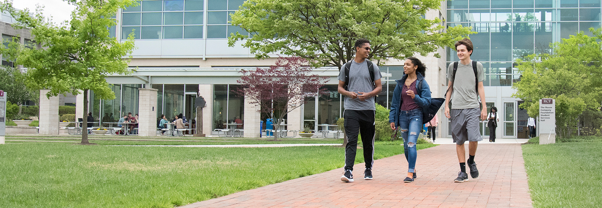

|

Extracurricular Activities at Hogsmeade
Welcome to our Activities Programme at Hogsmeade International College where you will find an array of extra-curricular activities to suit all ages. We offer a programme of over 50 different extra curricular activities, clubs and sports for you and your child to enjoy.
The importance of academic achievement for any student is essential at Hogsmeade International but I believe that for a well-rounded education, fun and energetic interests are also essential. Studies show that students enrolled in activities programmes have higher academic grades, learn to manage their time, relieve stress and learn to strive for excellence. These activities can also help with applications to universities and to improve social skills and overall productivity.
From my own personal experience, I remember my mother encouraging me to attend flamenco classes when I was a child. I enjoyed the experience so much that I chose to follow my heart and take up flamenco dancing professionally. The experience I gained in dancing for world-renowned companies and professionals, touring the world and eventually establishing my own Flamenco Dance company has made me a strong advocate for the vast possibilities available for our students and parents of the program.
I hope you enjoy the extra-curricular activities programme at Hogsmeade and look forward to another successful year.
Haydn Aberall, Extracurricular Activities Manager
|